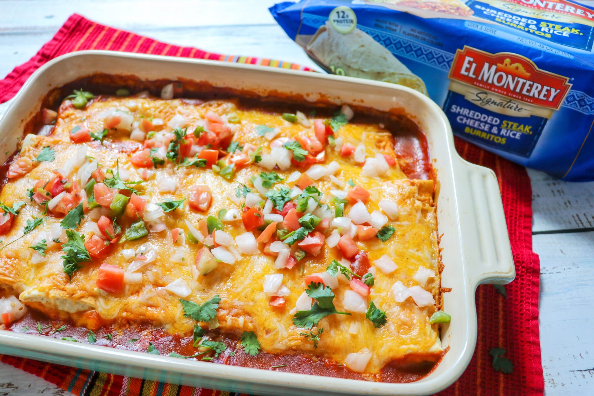

Vegetarian Burrito Casserole

Ingredients
- 3/4 cup white rice
- 1 1/2 cups water
- 1 (28 ounce) can whole tomatoes, drained, 1/4 cup juice reserved
- 2 1/2 teaspoons chili powder
- 1 teaspoon cumin
- 1 (1.25 ounce) package taco seasoning mix
- 2 (10 inch) burrito-size flour tortillas
- 1 (14.25 ounce) can vegetarian refried beans, divided
- 2 fresh jalapeno peppers - seeded, sliced, and divided
- 1 1/2 cups salsa, divided
- 2 1/2 cups shredded Cheddar cheese, divided
Steps
- In a saucepan bring water to a boil. Add rice and stir. Reduce heat, cover, and simmer for 20 minutes.
- Preheat oven to 375 degrees F (190 degrees C).
- Place soy crumbles, tomatoes, reserved tomato juice, chili powder, cumin, and taco seasoning in a medium frying pan over medium high heat. Cook and stir, breaking up tomatoes, for 10 minutes
- Lay 1 flour tortilla in a lightly greased 8x8 inch baking dish. Layer with one half of the beans, jalapeno slices, rice, salsa, soy mixture, and 1 cup Cheddar cheese. Repeat layers with remaining ingredients, beginning with the flour tortilla, and top with remaining 1 1/2 cups Cheddar cheese.
- Bake in the preheated oven for 15 minutes, or until heated through and cheese is melted. Serve immediately.